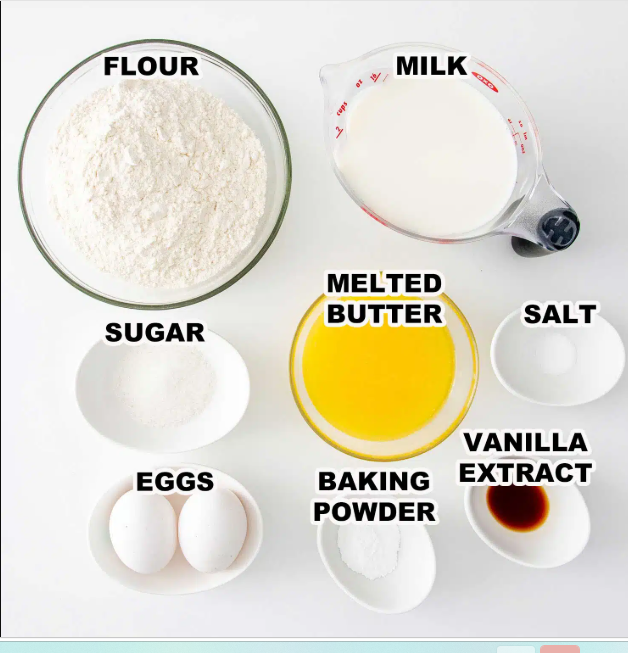

Now lets teach you how to actually make these waffles for yourself
First we will start with the ingredients
1 3/4 cups of all purpose floower
1 tablespoon of sugar
1 tablespoon of baking powder
1/2 teaspoon of salt
2 large eggs
1 3/4 cups of milk
1/2 cups of melted butter
1 teasspoon of vanilla extract
1/2 teaspoon of cinnamon

Now that we have the ingredients, we can proceed to the next step.
Basic Step-by-Step Instructions
Preheat your waffle iron according to the manufacturer's instructions.
Mix the dry ingredients in a large bowl. In a separate bowl, mix together flour, sugar, baking powder and salt.
In another bowl, whisk together the wet ingredients. Mix the eggs, milk, melted butter and vanilla extract until well combined.
Combine the wet and dry ingredients. Pour the wet ingredients into the bowl with the dry ingredients and stir until just combined. Be careful not to overmix.
Cook the waffles. Lightly grease the preheated waffle iron with cooking spray or a small amount of melted butter. Pour the batter onto the center of the waffle iron and cook until golden brown and crisp.
Serve and enjoy! Carefully remove the cooked waffles and serve them with your favorite toppings, such as syrup, fresh fruit, whipped cream, or butter.